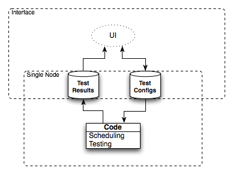

Design decisions and considerations
Note
The Design Requirements did not require 99999 availability but I took on purpose (for fun and educational purposes) it a little bit in that direction. I called the project jiggety after Jiggety Jig to emphasis it not too serious project :)
In next few points describe things I considered important and took into account:
fault-tolerance regarding both machines and network corruption
self-manageability by minimizing the administration effort (especially useful in multi-node configuration)
clarity and quality of results be accurate and avoid making false alerts (especially HTTP response time)
- important note HTTP response time != page load time
- to test that the test should run in real browser environment that has Javascript support ie. Selenium
- loosely coupled test execution environment making replacing/extending easy
- more then one execution, collecting results and summarizing should be taken into design (similarity to the distributed testing case)
- scheduling could be a global option but I decided to give more freedom and make per test setting
- using cron for scheduling flexibility and separation (each test as a separate process)
- self_refreshig of what test and when should run
I took syslog functionality (when all test runners report to one machine) for data exchange into account. Although it was never mend for that purpose initially the idea looked interesting. Some advantages of using CouchDB over syslog in that case:
- when the global syslog machine goes down (due machine or network fail) there is a chance that messages will get lost
- after it recovers some extra synchronization will be required what is not the case of CouchDB replication
- map/reduce tasks seem as a good match for log analysis
There are some similar issues when it comes the classic RDBMS and CouchDB for choosing a solution for test configuration. I share the filling that none of above given reasons makes in given case a huge difference and the main motivation was to make an experiment with CouchDB.
Overview
I decomposed the architecture into four functional elements presented in the figure below:
- Persistence Layer - Holding the test configuration and test results. I decided myself for CouchDB in this case.
- UI - Letting user to manipulate the test configuration and browse test results. I chose Django web framework for building that part.
- Scheduling - Running periodically tests accordingly to user settings. Cron is a solution joining simplicity with flexibility and gives its jobs nice isolation.
- Testing - Executing the user defined tests and reporting results to Persistence Layer. Keeping in mind that the test object is HTTP server response times and content Twill looks as a best candidate for that job.
In the figures bellow I illustrate how the architecture would change if the system would run in multi-node configuration. I Decided to make use of CouchDB replication to keep the testing nodes in sync with the user defined test configuration. Would would require code changes would be:
- an extra aggregation step in CouchDB
- automate procedure for adding new testing nodes
- some minor modifications in the UI to expose the multi-node feature to the user
